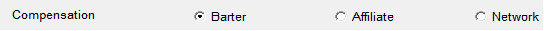

Main
Agreements can be created one at a time, or multiple agreements can be created at the same time using Fast Add.
To create a single new agreement, select the station for which you wish to create an agreement from the station dropdown, and select “Affiliated: No” from the vehicle list. Then select the vehicle you will be using.
The Main Agreement Tab has several fields that must be defined prior to entering the rest of your agreement. Depending on Site Options settings, you may or may not see all of the fields described below.
Start and End Dates
- Start Date: This is the start of the contract, but not necessarily the date that the first log gets sent. It must be set to a Monday.
- On Air Date: The Monday date of the first Log/Affidavit the affiliate will receive. This date must be a Monday, even if the program does not air on Monday.
- Historical Start Date: This field is automatically filled in based upon the earliest affiliation the station has within the system.
- End Date: This is the last day of the agreement, and is used on the Agreement Renewal Status report. This field is used as a reminder that an agreement is up for renewal. Logs can continue to be sent after the End Date (if it is before the Last Date On Air or Drop Date).
- The Last Date On Air and Drop Date represent the last date of the affiliate agreement, and the last date for which an affiliate will receive a log. If you are using these fields, the system will terminate the agreement and stop sending logs based on the earliest of the two dates. The Last Date On Air and/or the Drop Date must be a Sunday date, even if the program does not air on Sunday. If the agreement is “TFN” (airing Till Further Notice), leave these dates blank. The Last Date on Air and Drop Date can be entered later on when it becomes necessary to end the agreement.
- Comments: You can enter an internal comment of up to 120 characters in the Comments field. This comment can be included or excluded from the Affiliate Agreement report
- Contract Printed: Not implemented.
- Cancellation Notice Required: This field is where you enter the amount of notice an affiliate must give the network to terminate their agreement. This number could be different for each affiliate.
Critically Overdue and Chronically Overdue
Critically Overdue
The network can deem an amount of weeks between the time a log is sent to an affiliate and the time an affidavit is returned as being overdue. This number is set in the Affiliate System Site Options->Messages->Overdue Screen. In addition, if an affiliate is consecutively beyond what is considered overdue, the system will flag that affiliate as being Critically Overdue when the Critically Overdue report is generated. An affiliate’s status is changed from Critically Overdue: No, to Critically Overdue: Yes once they are flagged on the Critically Overdue report. It is the generation of that report changes the status.
The affiliate will remain Critically Overdue until the status is manually changed back to No by the affiliate’s Service Rep (described later in this document). If the affiliate is flagged as Critically Overdue a second time, the Chronically Overdue status is activated and changed to Yes. This field normally is grayed out and not accessible. It will only be activated if an affiliate is Critically Overdue a second time after their status had been manually returned to Critically Overdue: No.
Overdue Notice Suppression
Overdue emails are generated by the system but the overdue notices can be suppressed at the agreement level.
- Suppress Overdue Notices: This option is defaulted to No, which means that the affiliate will receive an email informing them of which affidavits are overdue, and providing them with a link to access those affidavits through the Vehicle Email feature if the network is using the Counterpoint Affidavit System. All overdue affiliates/affidavits set to not suppress overdue emails will appear on the Overdue C.P. Report.
- If Suppress Overdue Notices is changed to Yes, the affiliate will not receive the overdue email. Depending on how you answer the “Honor Suppress Notices” question on the Overdue C.P. report, it either will or will not include those agreements.
Web Password
The Web Password is pulled automatically from the Stations Screen.
Network Reps
- The Station Market Rep is pulled from the Stations Screen, if one has been assigned exclusively to the station.
- The Station Service Rep is pulled from the Stations Screen, if one has been assigned exclusively to the station.
- The Market Rep for an agreement can be changed by clicking on the dropdown and selecting a different Rep. You can also indicate that the Rep is the same as that listed in the Stations Screen. It is not mandatory to assign a Rep to an agreement.
- The Station Service Rep for an agreement can be changed on the main Agreement Screen by clicking on the dropdown and selecting a different Rep. You can also indicate that the Rep is the same as that listed in the Stations Screen. It is not mandatory to assign a Rep to an agreement
Affiliate Contracts
There are two ways to store PDFs of the actual signed contracts between the network and the stations.
- If there is only one document per agreement, documents for all agreements with all stations are stored in the Contracts folder (Network Drive:\CSI\Prod\Contracts. Ask your IT department for help creating or locating this folder). By clicking on the Contract PDF dropdown, you can find and select the document belonging to the agreement you are working on. From then on, when you view the agreement, you will see the document name appear in the dropdown, and you may view it by double-clicking it.
- If there are multiple documents or agreements, then a subfolder of the Contracts folder must be defined for each affiliate, and subfolders to the affiliate defined for each vehicle carried by that affiliate (contact your IT department for help creating these folders). The multiple documents for the agreement are placed in the vehicle subfolder. Then, use the Browse button to select a subfolder instead of a file. From then on, when you view the agreement, you will not see anything in the dropdown, but you will see the subfolder names shown next to the PDF Path. When you click on the dropdown, you will see all documents in the subfolder, and may read each one, one at a time.
Compensation
This feature is only available when the “Station Compensation” checkbox is checked on in Traffic Site Options->Options (otherwise it will not be visible). The Station Compensation feature is used to create the Station Compensation export, which is similar to the Fed vs. Aired report but includes compensation values (Barter, Affiliate, or Network) for each agreement.
When the Station Compensation feature is enabled, three radio buttons will appear as shown below:

Select the appropriate method for each agreement. If an agreement has a combination of two compensation types, for example, half Barter/half Affiliate, you must create one agreement for each compensation method.
Service Agreement
A Service Agreement is a special type of agreement that gets exported to X-Digital but is ignored by most of the affiliate system reports. Spots from Service type agreements get marked as Posted and Compliant automatically when the log gets generated.
Service agreements are included on the X-Digital export, the Affiliate Management screen, the Affiliate Affidavits screen, the ISCI Cross Reference Export, and the following reports: Agreement Renewal Status, Feed Verification, Regional Affiliate Copy Tracing, and Regional Copy Assignment. On the Affiliate Agreements report, checkboxes are present for "Non-service" and "Service" agreements. When the "Non-service" checkbox is checked, non-service agreements will be included on the report. When the "Service" checkbox is checked, service agreements will be included on the report. This allows the report to be run for non-service agreements only, service agreements only, or for both non-service and service agreements, depending on which options are selected.
To set up a service agreement, when creating the new agreement, select the "Service agreement - Yes" option on the Main tab on the agreement screen. Set the affidavit control method (on the Delivery tab) to “Manual” and the Posting Method to “Exact Times by Date”. Fill out the other options as needed, including the X-Digital options. The pledges should all be set to an aired status with service type agreements to ensure that all the spots get marked as posted and compliant during log generation.
By default, the “Service Agreement” setting is set to “No” when creating a new agreement. Only set it to “Yes” when the agreement needs to use the Service Agreement feature as described above.